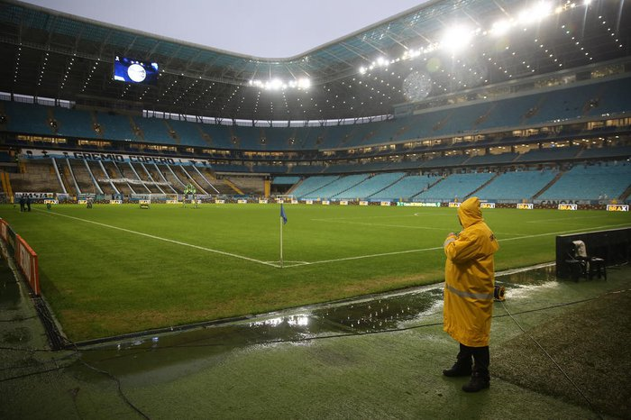
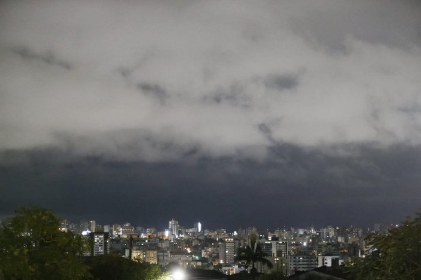

Blog News
Olá, Confira as principais notícias da semana.
-
Como está o gramado da Arena antes do jogo do Grêmio contra o Bahia
O jogo entre Grêmio e Bahia pela Copa do Brasil está mantido para esta quarta (12), às 19h. Ao menos por enquanto. Com a chuva intermitente desde o começo da manhã desta quarta, o gramado da Arena já apresenta algumas poças.
 -
Ciclone extratropical: Inmet eleva alerta para vermelho, que sinaliza grande perigo, em parte do RS
O Instituto Nacional de Meteorologia (Inmet) atualizou o alerta por conta do ciclone extratropical que atinge o Rio Grande do Sul para vermelho.

Mais informações sobre nossas notícias podem ser encontradas em nosso blog.
© 2023 Blog de Notícias. Todos os direitos reservados.